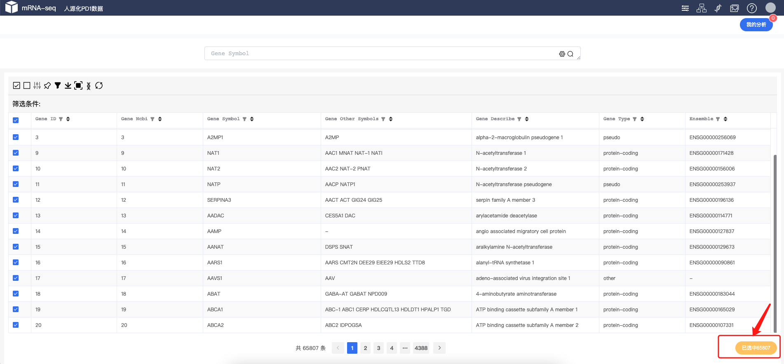
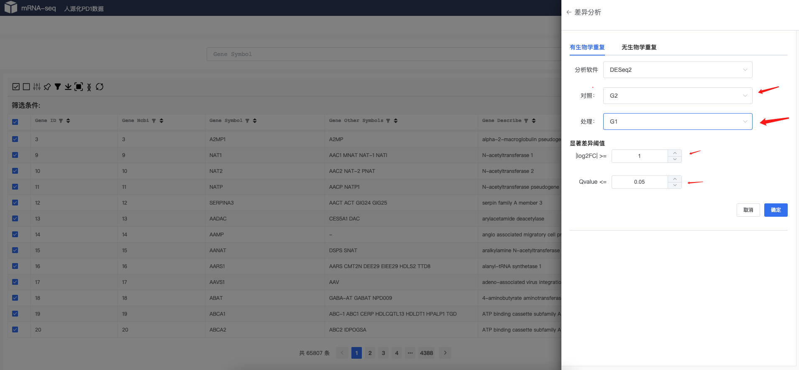
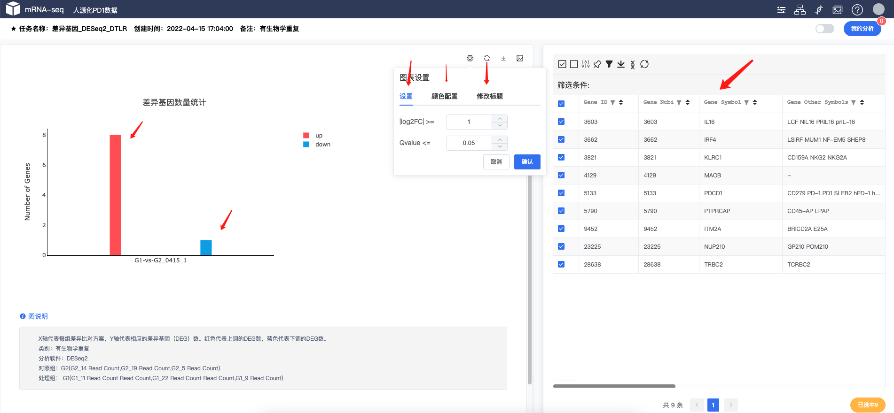

差异基因分析#
差异基因分析

Note
自定义选择分组、软件、参数进行差异基因分析。
数据选择#

Note
首页，或者任务任何选着工具的地方，都可以调出差异基因工具
工具选择#

Note
选择差异基因工具
选择参数#

Note
选择相应的参数，比如分组，foldchange Qvalue等。差异基因工具嵌套了不同的软件和算法，包括 DESeq2、edgeR、DEseq等，也可以在无重复样本情况下进行分析。
提交任务#

Note
进入任务列表，会显示相应提交的任务信息，等任务完成之后可以进行结果查看。
查看结果#

Note
差异基因工具会产生图标格式，左边一个📊 进行统计上调，下调结果统计，右边为差异结果基因。
其实左边图片可以进行颜色、参数、和对应标题设置。右边表格可以进行筛选。如：匹配相应基因、查看p-value、Q-value、log2FC等。
差异结果基因也可以调出任务工具进行相应的KEGG、GSEA、火山图等使用。
使用技巧
- 差异基因结果表格可以保存基因集，保存的基因集可以多次快速调度相应的工具。
- 差异基因结果图可以临时更改 Q-value的值进行临时调差异基因的多少。
- 差异基因结果图可以临时标题、颜色、值大小进行 图库保存。可在图库里面进行查看、下载、合并图片。